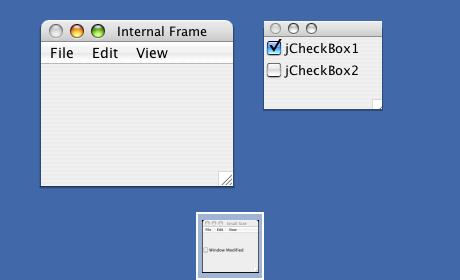
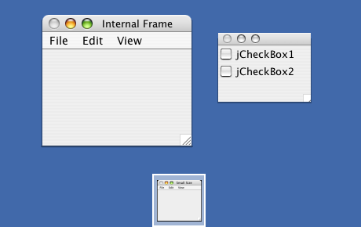
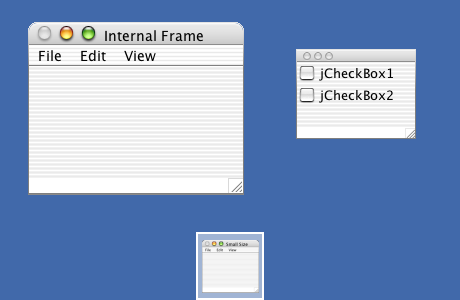

Quaqua does not implement the user interfaces for these components. It uses the ones provided by Apple's Look and Feels.
Apple has implemented them with Panther design for Java 1.4 and with Jaguar design for Java 1.3. Therefore you should use a matching JVM version, if you want to use JDesktopPanes with Mac OS X Jaguar or Mac OS X Panther.


